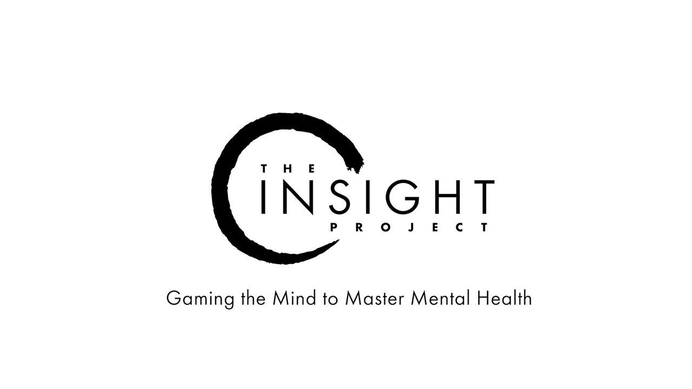

Ninja Theory anuncia The Insight, un proyecto de investigación centrado en la salud mental

Los desarrolladores de Hellblade: Senua's Sacrifice contaron con el asesoramiento del neurocientífico Paul Fletcher, profesor en la Universidad de Cambridge, para mostrar en el juego los efectos de la psicosis sobre la mente humana.
Fletcher y Ninja Theory volverán a colaborar en The Insight, un proyecto de investigación que tiene el objetivo de emplear los videojuegos como herramientas con las que identificar y responder a emociones como el miedo o la ansiedad y, en algún momento, ayudar a controlarlas.
Actualmente están en una fase muy temprana del proyecto, comprobando cómo se pueden usar los datos biométricos para "crear y controlar simulaciones". Los experimentos se están realizando con un sistema que permitirá la difusión de los resultado a través de los "canales establecidos del mundo científico".
En el artículo indican también que esperan que este proyecto ayude a "crear e inspirar un movimiento" y facilitar la accesibilidad a los tratamientos de salud mental.